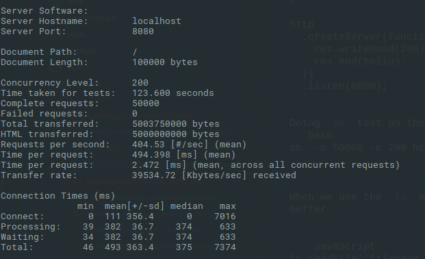
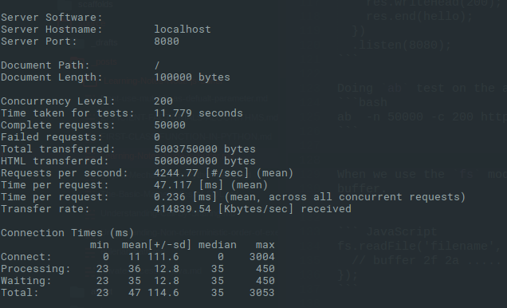

<!DOCTYPE html><html class="light page-post"><head><meta name="generator" content="Hexo 3.8.0"><meta charset="utf-8"><title>Diving Deep into Node.js-Buffer | Ankur Anand</title><meta name="viewport" content="width=device-width,initial-scale=1,maximum-scale=1"><link rel="canonical" href="http://blog.ankuranand.com/2017/08/31/Learning-Notes-Node-js-Buffer/"><meta name="title" content="Diving Deep into Node.js-Buffer"><meta name="referrer" content="unsafe-url"><meta name="author" content="Ankur Anand"><meta name="keywords" content="JavaScript,self-notes,Buffer,nodejs,8k-pool,"><meta name="description" content="IntroductionIn Node.js Buffer class is the core library. It brings a way for Node.js to store raw data, allowing Node.js to handle binary data. The raw data is stored in the instance of the buffer cla"><meta name="keywords" content="JavaScript,self-notes,Buffer,nodejs,8k-pool"><meta property="og:type" content="article"><meta property="og:title" content="Diving Deep into Node.js-Buffer"><meta property="og:url" content="http://blog.ankuranand.com/2017/08/31/Learning-Notes-Node-js-Buffer/"><meta property="og:site_name" content="Ankur Anand"><meta property="og:description" content="IntroductionIn Node.js Buffer class is the core library. It brings a way for Node.js to store raw data, allowing Node.js to handle binary data. The raw data is stored in the instance of the buffer cla"><meta property="og:locale" content="en"><meta property="og:image" content="http://blog.ankuranand.com/2017/08/31/Learning-Notes-Node-js-Buffer/StringAbTest.png"><meta property="og:image" content="http://blog.ankuranand.com/2017/08/31/Learning-Notes-Node-js-Buffer/BufferABTest.png"><meta property="og:updated_time" content="2019-06-09T10:43:19.236Z"><meta name="twitter:card" content="summary_large_image"><meta name="twitter:title" content="Diving Deep into Node.js-Buffer"><meta name="twitter:description" content="IntroductionIn Node.js Buffer class is the core library. It brings a way for Node.js to store raw data, allowing Node.js to handle binary data. The raw data is stored in the instance of the buffer cla"><meta name="twitter:image" content="http://blog.ankuranand.com/2017/08/31/Learning-Notes-Node-js-Buffer/StringAbTest.png"><meta name="twitter:creator" content="@in_aanand"><meta property="article:author" content="https://ankuranand.com/"><meta name="robots" content="index, follow"><link rel="icon" href="/images/favicon.png"><link href="/css/styles.css?v=c114cbeddx" rel="stylesheet"><link rel="stylesheet" href="/css/personal-style.css"><script type="text/javascript">!function(e,a,t,n,g,c,o){e.GoogleAnalyticsObject="ga",e.ga=e.ga||function(){(e.ga.q=e.ga.q||[]).push(arguments)},e.ga.l=1*new Date,c=a.createElement(t),o=a.getElementsByTagName(t)[0],c.async=1,c.src="//www.google-analytics.com/analytics.js",o.parentNode.insertBefore(c,o)}(window,document,"script"),ga("create","UA-76643336-2","auto"),ga("send","pageview")</script><script async src="https://busuanzi.ibruce.info/busuanzi/2.3/busuanzi.pure.mini.js"></script><link rel="stylesheet" href="//cdn.bootcss.com/font-awesome/4.3.0/css/font-awesome.min.css"></head></html><body><span id="toolbox-mobile" class="toolbox-mobile">Blog</span><div class="post-header CENTER"><div class="toolbox"><a class="toolbox-entry" href="/"><span class="toolbox-entry-text">Blog</span> <i class="icon-angle-down"></i> <i class="icon-home"></i></a><ul class="list-toolbox"><li class="item-toolbox"><a class="CIRCLE" href="https://ankuranand.com" rel="noopener noreferrer" target="_self">About</a></li><li class="item-toolbox"><a class="CIRCLE" href="/atom.xml" rel="noopener noreferrer" target="_blank">RSS</a></li><li class="item-toolbox"><a class="CIRCLE" href="/search/" rel="noopener noreferrer" target="_self">Search</a></li></ul></div></div><div class="content content-post CENTER"><article id="post-Learning-Notes-Node-js-Buffer" class="article article-type-post" itemprop="blogPost"><header class="article-header"><h1 class="post-title">Diving Deep into Node.js-Buffer</h1><div class="article-meta"><span><i class="icon-calendar"></i> <span>2017.08.31</span> </span><span class="article-author"><i class="icon-user"></i> <span>Ankur Anand</span> </span><span class="article-category"><i class="icon-list"></i> <a class="article-category-link" href="/categories/Nodejs/">Nodejs</a></span></div></header><div class="article-content"><h2 id="Introduction"><a href="#Introduction" class="headerlink" title="Introduction"></a>Introduction</h2><p>In <code>Node.js</code> Buffer class is the core library. It brings a way for <code>Node.js</code> to store raw data, allowing <code>Node.js</code> to handle binary data. The raw data is stored in the instance of the buffer class. A buffer is similar to an array of integers, but it corresponds to a piece of raw memory other than the v8 heap memory.</p><h2 id="Way-to-create-a-new-Buffer"><a href="#Way-to-create-a-new-Buffer" class="headerlink" title="Way to create a new Buffer"></a>Way to create a new Buffer</h2><p>At the start of the Node process <code>Buffer</code> is put into the global object, so doesn’t need explicit require.</p><figure class="highlight javascript"><table><tr><td class="gutter"><pre><span class="line">1</span><br><span class="line">2</span><br><span class="line">3</span><br><span class="line">4</span><br><span class="line">5</span><br><span class="line">6</span><br><span class="line">7</span><br><span class="line">8</span><br><span class="line">9</span><br><span class="line">10</span><br><span class="line">11</span><br><span class="line">12</span><br><span class="line">13</span><br><span class="line">14</span><br><span class="line">15</span><br></pre></td><td class="code"><pre><span class="line">&gt; <span class="built_in">console</span>.log(Buffer)</span><br><span class="line">&#123; [<span class="built_in">Function</span>: Buffer]</span><br><span class="line">  poolSize: <span class="number">8192</span>,</span><br><span class="line">  <span class="keyword">from</span>: [<span class="built_in">Function</span>],</span><br><span class="line">  alloc: [<span class="built_in">Function</span>],</span><br><span class="line">  allocUnsafe: [<span class="built_in">Function</span>],</span><br><span class="line">  allocUnsafeSlow: [<span class="built_in">Function</span>],</span><br><span class="line">  isBuffer: [<span class="built_in">Function</span>: isBuffer],</span><br><span class="line">  compare: [<span class="built_in">Function</span>: compare],</span><br><span class="line">  isEncoding: [<span class="built_in">Function</span>],</span><br><span class="line">  concat: [<span class="built_in">Function</span>],</span><br><span class="line">  byteLength: [<span class="built_in">Function</span>: byteLength],</span><br><span class="line">  [<span class="built_in">Symbol</span>(node.isEncoding)]: [<span class="built_in">Function</span>] &#125;</span><br><span class="line"><span class="literal">undefined</span></span><br><span class="line">&gt;</span><br></pre></td></tr></table></figure><p>Starting from Node <code>v6</code> we can create a new buffers from:</p><ol><li><p><code>Buffer.from()</code></p></li><li><p><code>Buffer.alloc()</code></p></li><li><code>Buffer.allocUnsafe()</code></li></ol><p><code>Buffer.from()</code> and <code>Buffer.alloc()</code> get the original buffer, replace the data so they are safe.</p><h4 id="Buffer-from"><a href="#Buffer-from" class="headerlink" title="Buffer.from"></a>Buffer.from</h4><p><a href="https://github.com/nodejs/node/blob/master/lib/buffer.js" target="_blank" rel="noopener">lib/buffer.js</a><br></p><figure class="highlight javascript"><table><tr><td class="gutter"><pre><span class="line">1</span><br><span class="line">2</span><br><span class="line">3</span><br><span class="line">4</span><br><span class="line">5</span><br><span class="line">6</span><br><span class="line">7</span><br><span class="line">8</span><br><span class="line">9</span><br><span class="line">10</span><br><span class="line">11</span><br><span class="line">12</span><br><span class="line">13</span><br><span class="line">14</span><br><span class="line">15</span><br><span class="line">16</span><br><span class="line">17</span><br><span class="line">18</span><br><span class="line">19</span><br><span class="line">20</span><br><span class="line">21</span><br><span class="line">22</span><br><span class="line">23</span><br><span class="line">24</span><br><span class="line">25</span><br><span class="line">26</span><br><span class="line">27</span><br></pre></td><td class="code"><pre><span class="line"><span class="comment">/**</span></span><br><span class="line"><span class="comment"> * Functionally equivalent to Buffer(arg, encoding) but throws a TypeError</span></span><br><span class="line"><span class="comment"> * if value is a number.</span></span><br><span class="line"><span class="comment"> * Buffer.from(str[, encoding])</span></span><br><span class="line"><span class="comment"> * Buffer.from(array)</span></span><br><span class="line"><span class="comment"> * Buffer.from(buffer)</span></span><br><span class="line"><span class="comment"> * Buffer.from(arrayBuffer[, byteOffset[, length]])</span></span><br><span class="line"><span class="comment"> **/</span></span><br><span class="line">Buffer.from = <span class="function"><span class="keyword">function</span> <span class="title">from</span>(<span class="params">value, encodingOrOffset, length</span>) </span>&#123;</span><br><span class="line">  <span class="keyword">if</span> (<span class="keyword">typeof</span> value === <span class="string">'string'</span>)</span><br><span class="line">    <span class="keyword">return</span> fromString(value, encodingOrOffset);</span><br><span class="line"></span><br><span class="line">  <span class="keyword">if</span> (isAnyArrayBuffer(value))</span><br><span class="line">    <span class="keyword">return</span> fromArrayBuffer(value, encodingOrOffset, length);</span><br><span class="line"></span><br><span class="line">  ......</span><br><span class="line"></span><br><span class="line">  <span class="keyword">const</span> valueOf = value.valueOf &amp;&amp; value.valueOf();</span><br><span class="line">  <span class="keyword">if</span> (valueOf != <span class="literal">null</span> &amp;&amp; valueOf !== value)</span><br><span class="line">    <span class="keyword">return</span> Buffer.from(valueOf, encodingOrOffset, length);</span><br><span class="line"></span><br><span class="line">  <span class="keyword">var</span> b = fromObject(value);</span><br><span class="line">  <span class="keyword">if</span> (b)</span><br><span class="line">    <span class="keyword">return</span> b;</span><br><span class="line"></span><br><span class="line">  ....</span><br><span class="line">&#125;;</span><br></pre></td></tr></table></figure><p></p><ul><li><code>ArrayBuffer</code>: Create FasterBuffer directly using ArrayBuffer</li><li><code>String</code>: Less than 4k use 8k pool, more than 4k call <code>binding.createFromString()</code></li><li><code>Object</code>: Less than 4k use 8k pool, more than 4k call <code>createUnsafeBuffer()</code></li><li><code>Buffer.allocUnsafe()</code>: Less than 4k use 8k pool, more than 4k call <code>createUnsafeBuffer()</code></li></ul><p>Important Read from offical documentaion <a href="https://nodejs.org/api/buffer.html#buffer_buffer_from_buffer_alloc_and_buffer_allocunsafe" target="_blank" rel="noopener">Buffer.from(), Buffer.alloc(), and Buffer.allocUnsafe()</a></p><h4 id="Buffer-alloc"><a href="#Buffer-alloc" class="headerlink" title="Buffer.alloc"></a>Buffer.alloc</h4><p><a href="https://github.com/nodejs/node/blob/master/lib/buffer.js" target="_blank" rel="noopener">lib/buffer.js</a></p><figure class="highlight javascript"><table><tr><td class="gutter"><pre><span class="line">1</span><br><span class="line">2</span><br><span class="line">3</span><br><span class="line">4</span><br><span class="line">5</span><br><span class="line">6</span><br><span class="line">7</span><br><span class="line">8</span><br><span class="line">9</span><br><span class="line">10</span><br><span class="line">11</span><br><span class="line">12</span><br><span class="line">13</span><br><span class="line">14</span><br><span class="line">15</span><br><span class="line">16</span><br><span class="line">17</span><br></pre></td><td class="code"><pre><span class="line"><span class="comment">/**</span></span><br><span class="line"><span class="comment"> * Creates a new filled Buffer instance.</span></span><br><span class="line"><span class="comment"> * alloc(size[, fill[, encoding]])</span></span><br><span class="line"><span class="comment"> **/</span></span><br><span class="line">Buffer.alloc = <span class="function"><span class="keyword">function</span> <span class="title">alloc</span>(<span class="params">size, fill, encoding</span>) </span>&#123;</span><br><span class="line">  assertSize(size);</span><br><span class="line">  <span class="keyword">if</span> (size &gt; <span class="number">0</span> &amp;&amp; fill !== <span class="literal">undefined</span>) &#123;</span><br><span class="line">    <span class="comment">// Since we are filling anyway, don't zero fill initially.</span></span><br><span class="line">    <span class="comment">// Only pay attention to encoding if it's a string. This</span></span><br><span class="line">    <span class="comment">// prevents accidentally sending in a number that would</span></span><br><span class="line">    <span class="comment">// be interpreted as a start offset.</span></span><br><span class="line">    <span class="keyword">if</span> (<span class="keyword">typeof</span> encoding !== <span class="string">'string'</span>)</span><br><span class="line">      encoding = <span class="literal">undefined</span>;</span><br><span class="line">    <span class="keyword">return</span> createUnsafeBuffer(size).fill(fill, encoding);</span><br><span class="line">  &#125;</span><br><span class="line">  <span class="keyword">return</span> <span class="keyword">new</span> FastBuffer(size);</span><br><span class="line">&#125;;</span><br></pre></td></tr></table></figure><h2 id="Why-we-need-buffer"><a href="#Why-we-need-buffer" class="headerlink" title="Why we need buffer ?"></a>Why we need buffer ?</h2><p>Consider the following two case:</p><h4 id="1-Using-the-large-string-to-send-as-response"><a href="#1-Using-the-large-string-to-send-as-response" class="headerlink" title="1. Using the large string to send as response"></a>1. Using the large string to send as response</h4><figure class="highlight javascript"><table><tr><td class="gutter"><pre><span class="line">1</span><br><span class="line">2</span><br><span class="line">3</span><br><span class="line">4</span><br><span class="line">5</span><br><span class="line">6</span><br><span class="line">7</span><br><span class="line">8</span><br><span class="line">9</span><br><span class="line">10</span><br><span class="line">11</span><br><span class="line">12</span><br></pre></td><td class="code"><pre><span class="line"><span class="keyword">const</span> http = <span class="built_in">require</span>(<span class="string">'http'</span>);</span><br><span class="line"><span class="keyword">let</span> hello = <span class="string">''</span>;</span><br><span class="line"><span class="keyword">for</span> (<span class="keyword">let</span> i = <span class="number">0</span>; i &lt; <span class="number">100000</span>; i++) &#123;</span><br><span class="line">  hello += <span class="string">'h'</span>;</span><br><span class="line">&#125;</span><br><span class="line"></span><br><span class="line">http</span><br><span class="line">  .createServer(<span class="function"><span class="keyword">function</span>(<span class="params">req, res</span>) </span>&#123;</span><br><span class="line">    res.writeHead(<span class="number">200</span>);</span><br><span class="line">    res.end(hello);</span><br><span class="line">  &#125;)</span><br><span class="line">  .listen(<span class="number">8080</span>);</span><br></pre></td></tr></table></figure><p>Doing <code>ab</code> test on the above<br></p><figure class="highlight bash"><table><tr><td class="gutter"><pre><span class="line">1</span><br></pre></td><td class="code"><pre><span class="line">ab  -n 50000 -c 200 http://localhost:8080/</span><br></pre></td></tr></table></figure><p></p><p></p><h4 id="2-Using-the-buffer-transmission"><a href="#2-Using-the-buffer-transmission" class="headerlink" title="2. Using the buffer transmission"></a>2. Using the buffer transmission</h4><figure class="highlight javascript"><table><tr><td class="gutter"><pre><span class="line">1</span><br><span class="line">2</span><br><span class="line">3</span><br><span class="line">4</span><br><span class="line">5</span><br><span class="line">6</span><br><span class="line">7</span><br><span class="line">8</span><br><span class="line">9</span><br><span class="line">10</span><br><span class="line">11</span><br><span class="line">12</span><br><span class="line">13</span><br></pre></td><td class="code"><pre><span class="line"><span class="keyword">const</span> http = <span class="built_in">require</span>(<span class="string">'http'</span>);</span><br><span class="line"><span class="keyword">let</span> hello = <span class="string">''</span>;</span><br><span class="line"><span class="keyword">for</span> (<span class="keyword">let</span> i = <span class="number">0</span>; i &lt; <span class="number">100000</span>; i++) &#123;</span><br><span class="line">  hello += <span class="string">'h'</span>;</span><br><span class="line">&#125;</span><br><span class="line"></span><br><span class="line"><span class="keyword">const</span> buf = Buffer.from(hello);</span><br><span class="line">http</span><br><span class="line">  .createServer(<span class="function"><span class="keyword">function</span>(<span class="params">req, res</span>) </span>&#123;</span><br><span class="line">    res.writeHead(<span class="number">200</span>);</span><br><span class="line">    res.end(buf);</span><br><span class="line">  &#125;)</span><br><span class="line">  .listen(<span class="number">8080</span>);</span><br></pre></td></tr></table></figure><p><code>ab</code> test result<br></p><p><em>Comparing the two result we can see that the binary data transmission rate is much faster, and less time consuming too.</em></p><p><code>Node.js</code> internally uses Buffer at lots of places. For example</p><p>When we use the <code>fs</code> module to read the contents of the documents, it returns a buffer.</p><figure class="highlight javascript"><table><tr><td class="gutter"><pre><span class="line">1</span><br><span class="line">2</span><br><span class="line">3</span><br></pre></td><td class="code"><pre><span class="line">fs.readFile(<span class="string">'filename'</span>, <span class="function"><span class="keyword">function</span>(<span class="params">err, buf</span>) </span>&#123;</span><br><span class="line">  <span class="comment">// buffer 2f 2a .....</span></span><br><span class="line">&#125;);</span><br></pre></td></tr></table></figure><p>In the case of <code>net</code> or <code>http</code> module, the data event parameters are a <em>buffer</em>.</p><figure class="highlight javascript"><table><tr><td class="gutter"><pre><span class="line">1</span><br><span class="line">2</span><br><span class="line">3</span><br><span class="line">4</span><br><span class="line">5</span><br><span class="line">6</span><br><span class="line">7</span><br></pre></td><td class="code"><pre><span class="line"><span class="keyword">var</span> bufs = [];</span><br><span class="line">conn.on(<span class="string">'data'</span>, <span class="function"><span class="keyword">function</span>(<span class="params">err, buff</span>) </span>&#123;</span><br><span class="line">  bufs.push(buff);</span><br><span class="line">&#125;);</span><br><span class="line">conn.on(<span class="string">'end'</span>, <span class="function"><span class="keyword">function</span>(<span class="params">err</span>) </span>&#123;</span><br><span class="line">  <span class="keyword">var</span> buff = Buffer.concat(bufs);</span><br><span class="line">&#125;)</span><br></pre></td></tr></table></figure><p>Since the memory space occupied by the buffer object is not calculated in the node.js process memory, We often use Buffer to store data that requires a lot of memory as node.js process has a maximum memory limit as follow in general.</p><ul><li>32bit - 512MB</li><li>64bit - 1.4GB</li></ul><h2 id="Buffer-8k-Pool-slab"><a href="#Buffer-8k-Pool-slab" class="headerlink" title="Buffer 8k Pool slab"></a>Buffer 8k Pool slab</h2><p><a href="https://github.com/nodejs/node/blob/master/lib/buffer.js" target="_blank" rel="noopener">lib/buffer.js</a> the buffer slab size is <code>Buffer.poolSize = 8 * 1024;</code> 8k. When the user calls for new Buffer,</p><figure class="highlight javascript"><table><tr><td class="gutter"><pre><span class="line">1</span><br><span class="line">2</span><br><span class="line">3</span><br><span class="line">4</span><br><span class="line">5</span><br><span class="line">6</span><br><span class="line">7</span><br><span class="line">8</span><br><span class="line">9</span><br><span class="line">10</span><br><span class="line">11</span><br><span class="line">12</span><br><span class="line">13</span><br><span class="line">14</span><br><span class="line">15</span><br><span class="line">16</span><br><span class="line">17</span><br><span class="line">18</span><br><span class="line">19</span><br><span class="line">20</span><br><span class="line">21</span><br><span class="line">22</span><br><span class="line">23</span><br><span class="line">24</span><br><span class="line">25</span><br><span class="line">26</span><br><span class="line">27</span><br><span class="line">28</span><br><span class="line">29</span><br><span class="line">30</span><br><span class="line">31</span><br><span class="line">32</span><br><span class="line">33</span><br><span class="line">34</span><br></pre></td><td class="code"><pre><span class="line"><span class="function"><span class="keyword">function</span> <span class="title">allocate</span>(<span class="params">size</span>) </span>&#123;</span><br><span class="line">  <span class="keyword">if</span> (size &lt;= <span class="number">0</span>) &#123;</span><br><span class="line">    <span class="keyword">return</span> <span class="keyword">new</span> FastBuffer();</span><br><span class="line">  &#125;</span><br><span class="line">  <span class="keyword">if</span> (size &lt; (Buffer.poolSize &gt;&gt;&gt; <span class="number">1</span>)) &#123; <span class="comment">//&lt;4k</span></span><br><span class="line">    <span class="keyword">if</span> (size &gt; (poolSize - poolOffset))</span><br><span class="line">      createPool();</span><br><span class="line">    <span class="keyword">var</span> b = <span class="keyword">new</span> FastBuffer(allocPool, poolOffset, size);</span><br><span class="line">    poolOffset += size;</span><br><span class="line">    alignPool();</span><br><span class="line">    <span class="keyword">return</span> b;</span><br><span class="line">  &#125; <span class="keyword">else</span> &#123;</span><br><span class="line">    <span class="keyword">return</span> createUnsafeBuffer(size);</span><br><span class="line">  &#125;</span><br><span class="line"></span><br><span class="line">  <span class="function"><span class="keyword">function</span> <span class="title">fromString</span>(<span class="params">string, encoding</span>) </span>&#123;</span><br><span class="line">  <span class="keyword">var</span> length;</span><br><span class="line">  ...</span><br><span class="line">  <span class="keyword">if</span> (length &gt;= (Buffer.poolSize &gt;&gt;&gt; <span class="number">1</span>))</span><br><span class="line">    <span class="keyword">return</span> createFromString(string, encoding);</span><br><span class="line"></span><br><span class="line">  <span class="keyword">if</span> (length &gt; (poolSize - poolOffset))</span><br><span class="line">    createPool();</span><br><span class="line">  <span class="keyword">var</span> b = <span class="keyword">new</span> FastBuffer(allocPool, poolOffset, length);</span><br><span class="line">  <span class="keyword">const</span> actual = b.write(string, encoding);</span><br><span class="line">  <span class="keyword">if</span> (actual !== length) &#123;</span><br><span class="line">    <span class="comment">// byteLength() may overestimate. That's a rare case, though.</span></span><br><span class="line">    b = <span class="keyword">new</span> FastBuffer(allocPool, poolOffset, actual);</span><br><span class="line">  &#125;</span><br><span class="line">  poolOffset += actual;</span><br><span class="line">  alignPool();</span><br><span class="line">  <span class="keyword">return</span> b;</span><br><span class="line">&#125;</span><br><span class="line">&#125;</span><br></pre></td></tr></table></figure><p><code>allocate()</code> and <code>fromString()</code> check for two cases</p><ul><li>Less than <code>4k</code> - check <code>8k</code> pool slab remaning capacity.</li><li>Greater than <code>4k</code> - and if more than remaining capacity Directly create a new 8k pool.</li></ul><figure class="highlight javascript"><table><tr><td class="gutter"><pre><span class="line">1</span><br><span class="line">2</span><br><span class="line">3</span><br><span class="line">4</span><br><span class="line">5</span><br><span class="line">6</span><br><span class="line">7</span><br><span class="line">8</span><br><span class="line">9</span><br><span class="line">10</span><br><span class="line">11</span><br><span class="line">12</span><br><span class="line">13</span><br><span class="line">14</span><br><span class="line">15</span><br></pre></td><td class="code"><pre><span class="line"><span class="function"><span class="keyword">function</span> <span class="title">createPool</span>(<span class="params"></span>) </span>&#123;</span><br><span class="line">  poolSize = Buffer.poolSize;</span><br><span class="line">  allocPool = createUnsafeArrayBuffer(poolSize);</span><br><span class="line">  poolOffset = <span class="number">0</span>;</span><br><span class="line">&#125;</span><br><span class="line">createPool();</span><br><span class="line"></span><br><span class="line"></span><br><span class="line"><span class="function"><span class="keyword">function</span> <span class="title">alignPool</span>(<span class="params"></span>) </span>&#123;</span><br><span class="line">  <span class="comment">// Ensure aligned slices</span></span><br><span class="line">  <span class="keyword">if</span> (poolOffset &amp; <span class="number">0x7</span>) &#123;</span><br><span class="line">    poolOffset |= <span class="number">0x7</span>;</span><br><span class="line">    poolOffset++;</span><br><span class="line">  &#125;</span><br><span class="line">&#125;</span><br></pre></td></tr></table></figure><p>8k Slab are reclaimbed by the v8 if all other references have become null. <code>createPool()</code> interanally calls <code>createUnsafeArrayBuffer()</code> to get the corresponing instance of ArrayBuffer and because ArrayBuffer is</p><blockquote><p>fixed-length raw binary data buffer</p></blockquote><p>it’s insecure, and there is danger of leakage of sensitive information in memory.</p><p><a href="https://github.com/nodejs/node-v0.x-archive/issues/2035" target="_blank" rel="noopener">Side Notes: There is larger stream read-buffer in libuv unix/stream.c 64K with a slab Size of around 1MB</a></p><p class="article-content share_center"><strong>Learned something? Share 👏 to help others find this article.</strong></p><div class="share share_center"><ul class="share__list"><li class="share__item"><a href="https://twitter.com/share?text=Diving Deep into Node.js-Buffer&amp;url=http://blog.ankuranand.com/2017/08/31/Learning-Notes-Node-js-Buffer/index.html&amp;via=in_aanand" target="_blank"><svg class="icon share__icon share__icon--twitter"><use xlink:href="#icon-twitter" xmlns:xlink="https://www.w3.org/1999/xlink"/></svg> Tweet this</a></li></ul></div></div></article><div class="box-prev-next clearfix" style="margin-top:10px"><a class="show pull-left" href="/2017/06/03/Understanding-Non-deterministic-order-of-execution-of-setTimeout-vs-setImmediate-in-node-js-event-loop/"><i class="icon icon-angle-left"></i> </a><a class="show pull-right" href="/2017/12/28/Learning-Notes-JavaScript-Prototype/"><i class="icon icon-angle-right"></i></a></div></div><a id="backTop" class="back-top"><i class="icon-angle-up"></i></a><div class="modal" id="modal"><span id="cover" class="cover hide"></span><div id="modal-dialog" class="modal-dialog hide-dialog"><div class="modal-header"><span id="close" class="btn-close">Close</span></div><hr><div class="modal-body"><ul class="list-toolbox"><li class="item-toolbox"><a class="CIRCLE" href="https://ankuranand.com" rel="noopener noreferrer" target="_self">About</a></li><li class="item-toolbox"><a class="CIRCLE" href="/atom.xml" rel="noopener noreferrer" target="_blank">RSS</a></li><li class="item-toolbox"><a class="CIRCLE" href="/search/" rel="noopener noreferrer" target="_self">Search</a></li></ul></div></div></div><div class="fexo-comments comments-post"><div id="gitalk-container"></div><link rel="stylesheet" href="https://cdn.jsdelivr.net/npm/gitalk@1/dist/gitalk.css"><script src="https://cdn.jsdelivr.net/npm/gitalk@1/dist/gitalk.min.js"></script><script>const gitalk = new Gitalk({
  clientID: 'Infinity',
  clientSecret: '9ac2991775db990e81299dfa99a114395b58de3a',
  repo: 'blog',
  owner: 'ankur-anand',
  id: location.pathname.split('/')[4].substring(0, 45),
  // id: location.pathname,
  admin: ['ankur-anand'],
  labels: ['gicomment'],
  // facebook-like distraction free mode
  distractionFreeMode: false
})
gitalk.render('gitalk-container')</script></div><script type="text/javascript">function loadScript(e,t){var a=document.createElement("script");a.type="text/javascript",a.readyState?a.onreadystatechange=function(){"loaded"!=a.readyState&&"complete"!=a.readyState||(a.onreadystatechange=null,t())}:a.onload=function(){t()},a.src=e,document.getElementsByTagName("head")[0].appendChild(a)}window.onload=function(){loadScript("/js/bundle.js?235683",function(){})}</script><div class="svg-holder"><svg xmlns="https://www.w3.org/2000/svg"><symbol viewbox="0 0 32 32" id="icon-twitter"><title>twitter</title><path d="M31,6.696c-1.103,0.489-2.291,0.82-3.536,0.969c1.271-0.762,2.247-1.968,2.708-3.404c-1.189,0.705-2.508,1.218-3.909,1.493
          c-1.122-1.196-2.723-1.943-4.493-1.943c-3.398,0-6.154,2.755-6.154,6.154c0,0.483,0.055,0.953,0.159,1.402
          C10.66,11.111,6.125,8.66,3.089,4.937C2.561,5.846,2.256,6.902,2.256,8.031c0,2.135,1.086,4.019,2.737,5.123
          c-1.009-0.031-1.957-0.309-2.786-0.77c-0.002,0.025-0.002,0.052-0.002,0.078c0,2.982,2.122,5.469,4.937,6.034
          c-0.517,0.142-1.061,0.217-1.622,0.217c-0.396,0-0.782-0.039-1.158-0.112c0.784,2.444,3.057,4.225,5.75,4.274
          c-2.105,1.651-4.761,2.635-7.645,2.635c-0.496,0-0.985-0.029-1.467-0.086c2.723,1.746,5.958,2.765,9.434,2.765
          c11.321,0,17.512-9.379,17.512-17.512c0-0.268-0.005-0.533-0.018-0.796C29.131,9.014,30.174,7.93,31,6.696L31,6.696z"/></symbol></svg></div><script type="text/x-mathjax-config">MathJax.Hub.Config({
    tex2jax: {
      inlineMath: [ ['$','$'], ["\\(","\\)"] ],
      processEscapes: true
    }
  });</script><script src="https://cdnjs.cloudflare.com/ajax/libs/mathjax/2.7.5/MathJax.js?config=TeX-MML-AM_CHTML" async></script></body>